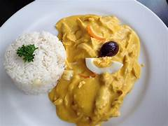
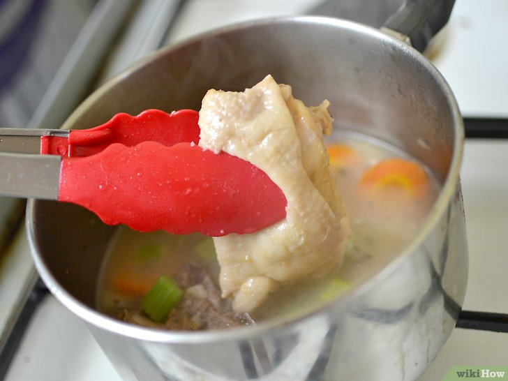
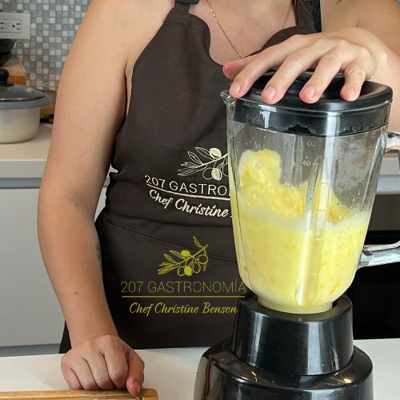
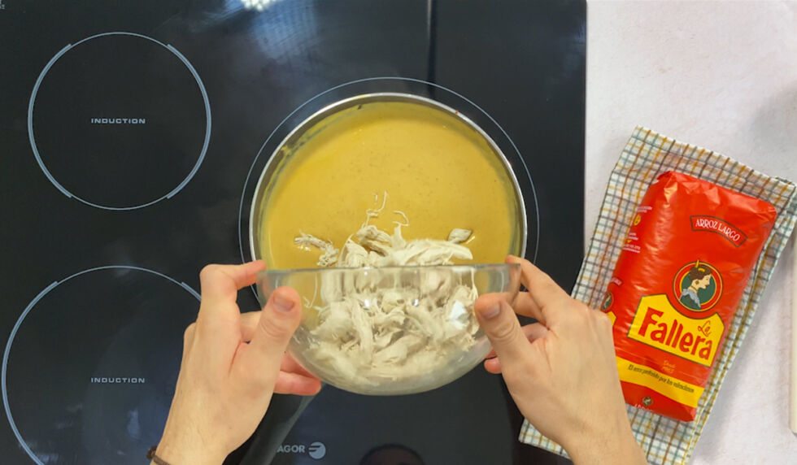
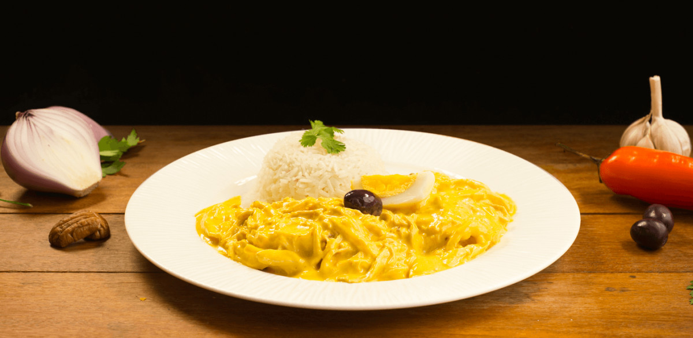

Sabor Criollo
Sabores peruanos que conquistan el corazón
Sabores peruanos que conquistan el corazón

El ají de gallina es uno de los platos más queridos del Perú. Cremoso, suave y lleno de sabor, combina pollo deshilachado con una deliciosa salsa hecha a base de ají amarillo, pan, leche y especias tradicionales. Un verdadero clásico de la gastronomía peruana.




Mira esta guía completa para preparar un ají de gallina cremoso y delicioso.